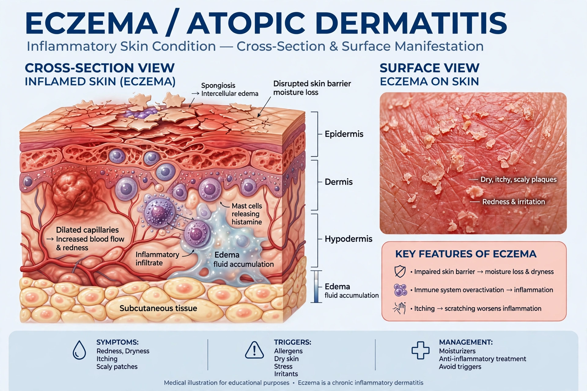

Eczema is a group of skin conditions causing inflammation, itchiness, redness, dryness and sometimes blistering or thickening of the skin. The most common form is atopic dermatitis (atopic eczema), which often begins in childhood and is associated with asthma and hay fever. Eczema affects roughly 10–20% of children and several percent of adults worldwide.

| Eczema | |
|---|---|
| Symptoms | Itch, redness, dry scaly skin |
| Causes | Genetics, skin-barrier defects, immune factors, irritants |
| Treatment | Moisturisers, topical steroids, calcineurin inhibitors, biologics |
Besides atopic dermatitis, eczema includes contact dermatitis (allergic and irritant), dyshidrotic eczema of hands and feet, nummular (discoid) eczema, seborrhoeic dermatitis, and stasis dermatitis of the lower legs.
In atopic eczema, mutations in the filaggrin gene impair the skin barrier, allowing allergens and microbes such as Staphylococcus aureus to trigger inflammation. Triggers include soaps, detergents, dust mites, stress, weather and some foods in children.
There is no cure, but most cases are controlled with emollients, avoidance of triggers, topical corticosteroids and calcineurin inhibitors. Severe disease may need phototherapy, immunosuppressants, or biologics such as dupilumab and JAK inhibitors. Scratching worsens the itch–scratch cycle and risks infection.